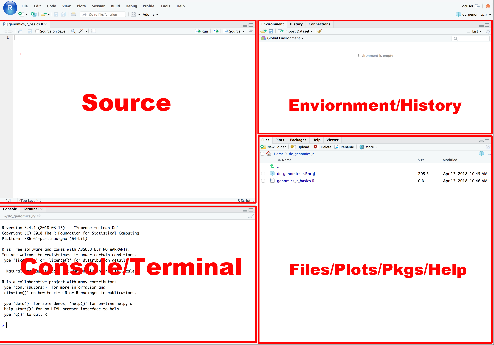
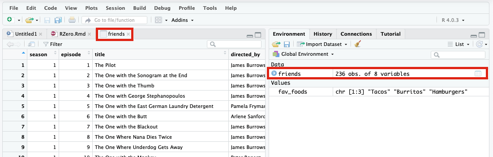

dir()r_basics
Learning Objectives
Become familiar with the RStudio environment
Identify the key elements of the R programming language
- Functions
- Packages
- Objects
- Operators
- Vectors
- Data frames
Write your first R code
The RStudio Environment
Load RStudio Workbench in your favorite browser, open the Transition to R project, and you should see a window similar to that shown below.

The following windows will appear as part of the RStudio user-interface:
Console window - The window on the right in Figure 1 is the standard R console window (the only one you would see if you used only R and not R via RStudio. This is the window where you type in commands and the results are returned.
Workspace / History - This window (left side in Figure 1) shows all the objects that you have created in the current R session (Workspace tab) and the commands you have used in the current R session (History tab).
Files / Plots / Packages / Help - This window (bottom right in Figure 1) is primarily used for displaying plots (graphs) and for using the help system.
R is a command driven program, which means that you type in code to the Console window and it returns the result. The advantage of this is that the software is very powerful, but the disadvantage is that to start with the software requires a steep learning curve!
You can either type code directly into the Console window, or you can type it into a text file, and then run the code you have written in the Console window. The advantage of the latter is that you can save the code, so that to run it a second time at a later date, simply open the text file and run the code, you do not need to type it in a second time! To create a text file to write your code in select
File -> New File -> R Script
and the RStudio window changes to:

For a comprehensive one-page guide to the RStudio IDE, check out this ‘cheatsheet’
To save the R code (once you’ve written some!), go to
File -> Save
and a dialog box will appear asking where (on which drive) you would like to save the code. Once saved, you can use your code again, so no need to type it in a second time. If you close RStudio and then open it again you can read in your code by going to
File -> Open File…
or navigate to your file in the “Files/Plots/Pkgs/Help” window (see image below) and find the file from the location where you saved it.
Key Elements of R Programming Language
Now let’s start to explore what R can do for us.
Functions
A function in R (or any computing language) is a short program that takes some input and returns some output. Functions may seem like an advanced topic (and they are), but you probably have already used many functions if you’ve used Microsoft Excel (think sum() or mean() - both of which are tiny programs that running specific actions on data).
Exercise 1
Try the following functions by writing them in your script. See if you can guess what they do, and make sure to add comments to your script about your assumed purpose.
sessionInfo()date()Sys.time()Exercise 1 solutions
dir() # Lists files in the working directory sessionInfo() # Gives the version of R and additional info including on attached packages date() # Gives the current date Sys.time() # Gives the current time
An R Function has three key properties:
- Functions have a name (e.g.
dir); note that functions are case sensitive - Function names are followed by a pair of
() - Inside the parentheses, a function may take 0 or more arguments
An argument may be a specific input for your function and/or may modify the function’s behavior. For example the function round() will round a number with a decimal:
# This will round a number to the nearest integer
round(3.14159)[1] 3Getting help with function arguments
?
What if you wanted to round to one significant digit? round() can do this, but you may first need to read the help to find out how. To see the help (In R sometimes also called a “vignette”) enter a ? in front of the function name:
?round()The “Help” tab will show you information (often, too much information). You will slowly learn how to read and make sense of help files. Checking the “Usage” or “Examples” headings is often a good place to look first. If you look under “Arguments,” we also see what arguments we can pass to this function to modify its behavior.
args
You can also see a function’s argument using the args() function:
args(round)function (x, digits = 0)
NULL#add code below to round 3.14159 to 3.14Contextual Help
Here is one last bonus we will mention about RStudio. It’s difficult to remember all of the arguments and definitions associated with a given function. When you start typing the name of a function and hit the Tab key, RStudio will display functions and associated help:

Once you type a function, hitting the Tab inside the parentheses will show you the function’s arguments and provide additional help for each of these arguments.
derived in part from https://datacarpentry.org/genomics-r-intro/01-introduction/index.html
Packages
Built into R is a wide range of functions that’ll assist you in analyzing and visualizing your data. However, the true power of R comes from the millions of additional functions you can load into your coding environment. There is an enormous development community that is continually updating and creating new packages that enhance the functionality of R.
To install packages use the install.package() function and to load a package into your current environment use the library() function. For each of these functions, pass the name of the package inside quotations marks (e.g. install.packages("cowsay") and library("cowsay"))
#type in the the code to install and load the cowsay package belowObjects
What might be called a variable in many languages is called an object in R.
To create an object you need:
- a name (e.g. ‘a’)
- a value (e.g. ‘1’)
- the assignment operator (‘<-’)
Nifty keyboard shortcut alert! To make a <- : hold Alt (or option on a Mac) and press the - (minus sign) key.
# this line creates the object 'a' and assigns it the value '1'Next, run this line of code in your script. You can run a line of code by hitting the Run button that is just above the first line of your script in the header of the Source pane or you can use the appropriate shortcut:
- Windows execution shortcut:
Ctrl+Enter - Mac execution shortcut:
Cmd()+Enter
To run multiple lines of code, you can highlight all the line you wish to run and then hit Run or use the shortcut key combo listed above.
##Exercise: Create Objects Create the following objects; give each object an appropriate name (your best guess at what name to use is fine):
Create an object that has the value of number of pairs of human chromosomes
Create an object that has a value of your favorite gene name
Create an object that has this URL as its value: “ftp://ftp.ensemblgenomes.org/pub/bacteria/release-39/fasta/bacteria_5_collection/escherichia_coli_b_str_rel606/”
Create an object that has the value of your birthday
####*Reassigning object names or deleting objects
Once an object has a value, you can change that value by overwriting it. R will not give you a warning or error if you overwriting an object, which may or may not be a good thing depending on how you look at it.
a <- 4You can also remove an object from R’s memory entirely. The rm() function will delete the object.
# delete the object 'a'
rm(a)Operators
Once an object exists (which by definition also means it has a mode), R can appropriately manipulate that object. For example, objects of the numeric modes can be added, multiplied, divided, etc. R provides several mathematical (arithmetic) operators including:
| Operator | Description |
|---|---|
| + | Addition |
| - | Subtraction |
| * | Multiplication |
| / | Division |
| ^ or ** | Exponentiation |
| a%?%b | Integer Division (where remainder is discarded) |
| a%%b | modulus (returns remainder after division) |
These can be used with literal numbers:
(1+ (5**0.05))/2[1] 1.041899and importantly, can also be used on any object that evaluates to (i.e. interpreted by R) a numeric object:
number_of_presidents <- 45
as_of_jan202021_number_of_presidents <- number_of_presidents + 1
as_of_jan202021_number_of_presidents[1] 46Vectors
Vectors are probably the most used commonly used object type in R. A vector is a collection of values that are all of the same type (numbers, characters, etc.).
One of the most common ways to create a vector is to use the c() function - the “concatenate” or “combine” function. Inside the function you may enter one or more values; for multiple values, separate each value with a comma:
## Create a list of your favorite foods
## Check the mode, length, and structure of 'fav_foods'
# Mode
# Length
# StructureData frame
A data frame is the standard way in R to store tabular data. A data fame could also be thought of as a collection of vectors, all of which have the same length.
Importing tablular data into R
There are several ways to import data into R. For our purpose here, we will focus on using the tools every R installation comes with (so called “base” R) to import a comma-delimited file containing the results of our variant calling workflow. We will need to load the sheet using a function called read.csv().
##Exercise - read.csv() Before using the read.csv() function, use R’s help feature to answer the following questions.
Hint: Entering ‘?’ before the function name and then running that line will bring up the help documentation. Also, when reading this particular help be careful to pay attention to the ‘read.csv’ expression under the ‘Usage’ heading. Other answers will be in the ‘Arguments’ heading.
What is the default parameter for ‘header’ in the read.csv() function?
What argument would you have to change to read a file that was delimited by semicolons (;) rather than commas?
What argument would you have to change to read file in which numbers used commas for decimal separation (i.e. 1,00)?
What argument would you have to change to read in only the first 10,000 rows of a very large file?
# Before using the read.csv() function, use R’s help feature to answer the following questions.
#Hint: Entering ‘?’ before the function name and then running that line will bring up the help documentation. Also, when reading this particular help be careful to pay attention to the ‘read.csv’ expression under the ‘Usage’ heading. Other answers will be in the ‘Arguments’ heading.
#A) What is the default parameter for ‘header’ in the read.csv() function?
#B) What argument would you have to change to read a file that was delimited by semicolons (;) rather than commas?
#C) What argument would you have to change to read file in which numbers used commas for decimal separation (i.e. 1,00)?
#D) What argument would you have to change to read in only the first 10,000 rows of a very large file?Now, let’s read the file friends_info.csv which is located in /Cloud/project/Data/. Assign this data frame to an objected called friends. The first argument to ass to our read.csv() function is the file path for our data. The file path must be in quotes and now is a good time to remember to use tab autocompletion. If you use tab autocompletion you avoid typos and errors in file paths. Use it!
## read in a CSV file and save it as 'friends'
friends <- read_csv("friends_info.csv")Rows: 236 Columns: 8── Column specification ────────────────────────────────────────────────────────
Delimiter: ","
chr (3): title, directed_by, written_by
dbl (4): season, episode, us_views_millions, imdb_rating
date (1): air_date
ℹ Use `spec()` to retrieve the full column specification for this data.
ℹ Specify the column types or set `show_col_types = FALSE` to quiet this message.One of the first things you should notice is that in the Environment window, you have the newly created friends object. listed with 236 obs. (observations/rows) of 29 variables (columns). Double-clicking on the name of the object will open a view of the data in a new tab.

Summarizing and determining the structure of a data frame.
Using only two functions, we can learn a lot about a data frame including some summary statistics as well as well as the “structure” of the data frame. Let’s examine what each of these functions can tell us:
## get summary statistics on a data frameOur data frame had 8 variables, so we get 8 fields that summarize data. The imdb_rating, us_views_millions, episode, and season variables are numerical data and so you get summary statistics on the min/max values, as well as mean, median, and interquartile ranges. Variables like air_date and title are treated as categorical data.
Before we analyze the data further, we also need to know a little more about the data frame structure to do that we use the str() function:
## get the structure of a data frameOk, that’s a lot up unpack! Some things to notice.
- the object type data.frame is displayed in the first row along with its dimensions, in this case 236 observations (rows) and 8 variables (columns)
- Each variable (column) has a name (e.g. title). This is followed by the object mode (e.g. factor, int, num, etc.). Notice that before each variable name there is a $ - this will be important later.
Exercise: Import explore new data set
Import the friends_emotions.csv found in the slides_demo folder and assign the data frame to a new object “emotions”
Explore the structure of emotions. How many variables and observations does your data frame have? What mode are your variables?
Run summary statistics on your data frame? Is there anything interesting from this summary?
Exercise: Explore the datasets built into R
There are a number of datasets built into R. They can explored by calling the data() function.
#type the code required to call the data functionExplore 3 individual datasets by calling them
Assign the dataset that you are most interested in to a new object called best_data. Explore best_data using the summary and structure functions we talked about above. What does the head() function do?
After Class Learning Activity: Your first code with COWSAY
For your next grant, you’d really like to include a figure what has a cow asking (politely) for a strong score. Let’s figure out how to do that!
You are in luck, someone kind soul in this world created a package called “cowsay” that draws animals with dialogs boxes that you can populate!
In your first two lines of code, install and load the cowsay package
In line 4 of your code, use one of the help methods we learned to ascertain more about the cowsay package.
Now that we know the cowsay package contains a single function, say(), determine what arguments you can pass to the function.
In line 5 of your code, called the say() function and pass it the phrase/string “Me need $”
In line 6 of your code, let’s create an object that contains your phrase
In line 7 of your code, pass your object to the say().
Cats are great but we really want a different animal to convey our feelings. Determine what argument you need to call to change your animal.
Red text might be a little aggressive for your grant, determine what argument you need to call to change the color of your phrase. While you are at it, color the color of the animal as well.
Some packages have built in data. In COWSAY, there is a “rms” data set that pulls a random ‘quote ’fact’ about Richard Stallman from rmsfact::rmsfact() package. Instead of having your animal say your phrase, have it say a random quote from Richard.
#cowsay code